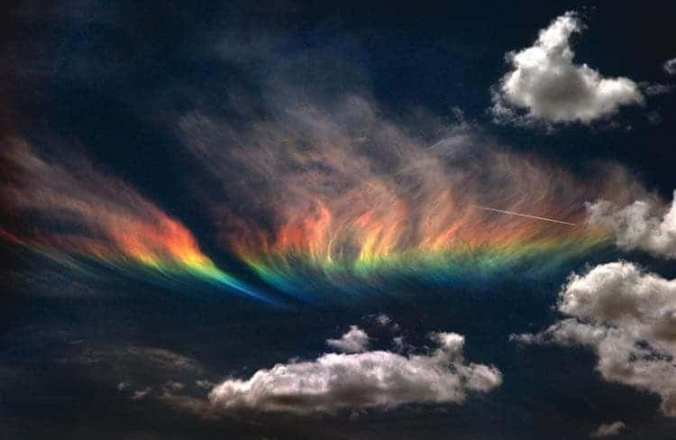

Fire Rainbow
How Sun and Ice Combine to Create a Fire Rainbow
Imagine looking up to see a huge rainbow that appears to be on fire
- its colors shimmering across the sky from horizon to horizon.

This effect, though rare, can happen under the right weather conditions. It's commonly known as a fire rainbow, but the scientific name is a circumhorizontal arc.
Tow special circumstances must exist to produce a fire rainbow:
1. Cirrus clouds must be present. They're wispy clouds that exist in the high altitude, wher ethe air is very cold. The low temperature up there means the clouds are made up of millions of hexagonal (or six-sided) ice crystals.
2. Sunlights must pass through the cirrus clouds at a very high angle - greater than 58 dgrees th the ground. The rays of sunlight striking the clouds's crystals create an effect like sending a beam of light through a prism, but multiplied by millions.
Here's why the fire rainbow happens: Sunlight passes though the vertical face of the ice crystal but is then bent downward - or refracted - through the crystal's bottom face, toward the ground.
In a vaccum, light waves travel in a straight line. But when light hits dense material like glass, water, or ice, it slows down and changes direction, just as diver does when entering water. Therefore, sunlight traveling through solid ice crystals bends. The refraction of sunlight through the cloud's millions of crystals creates the shimmering, fire-like effect.
Along with refraction, the light can be split into separate bands of colored light, deepening the effect. This arc of shimmering color can span the horizon, which is why it's called a circumhorizontal arc.
Fire ranibows are rare, but when they do apear, they can span hundreds of miles and last for hours.
If you have any questions please feel free to leave a comment in the comment box below!!